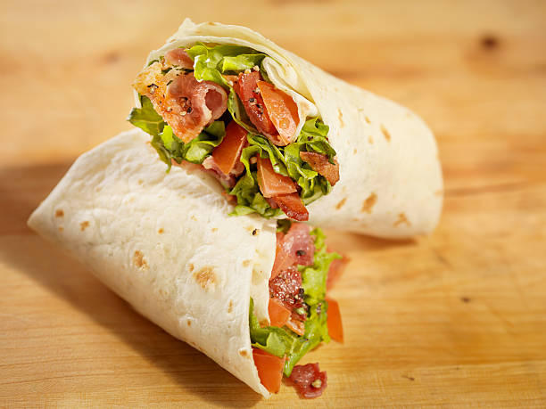

Fix Yourself a BLT WRAPS

Ingredients
- 1 pound(approx 0.45kg) thick sliced bacon, cut into 1 inch pieces
- 4(12 inch) flour tortillas
- 1 cup(approx 128g) shredded Cheddar cheese
- 1/2 head iceberg lettuce, shredded
- 1 tomato, diced
Steps
- Place bacon in a large, deep skillet. Cook a over medium-high heat until evenly brown.
- Drain, and set aside the bacon.
- Place 1 tortilla on a microwave-safe plate. Sprinkle tortilla with 1/4 cup cheese. Cook in microwave 1 to 2 minutes, or until cheese is melted.
- Immediately top with 1/4 of the bacon, lettuce, and tomato.
- Fold sides of tortilla over, then roll up.
- Repeat the steps for remaining tortillas.
- Cut each wrap in half before serving.
- Chef's tip - Add 1 tbsp pickled onion to add tangy flavour to your wraps. Making it more Delicious!
Nutrition Facts
Per Serving: 695 calories, 31.4g protein, 64.2g carbohydrates, 34.1g fats, 70.6mg cholesterol, 1788.3mg sodium
Back to Top
Back to Homepage